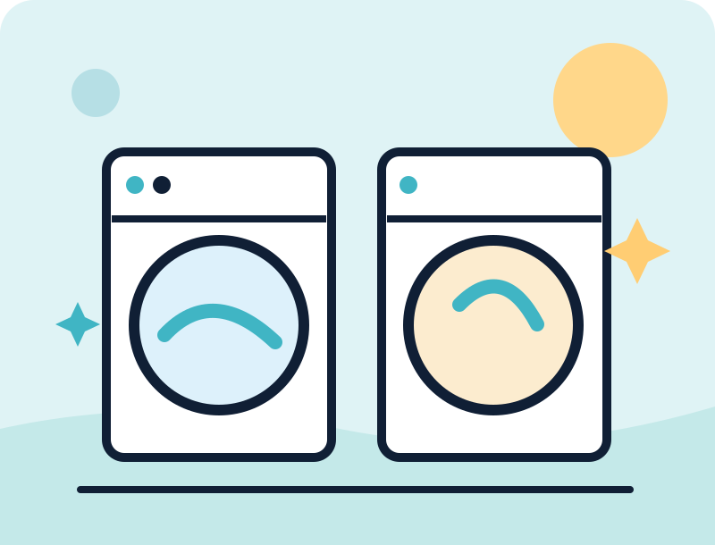

Þurrkari virðist hægari
Ló og ryk safnast á aðgengilegum stöðum. Léleg þurrkun getur þó líka stafað af bilun.
Loftvernd býður upp á skilgreinda umhirðu þurrkara, þvottavéla og aðgengilegra baðvifta. Fáðu þægilega þjónustu í einni heimsókn og skýrt yfirlit yfir hvað var gert.
Áhersla á skilgreint viðhald, skýra verðupplýsingu og greiðslu eftir heimsókn.

Heimilistækjaumhirða ✦Ló og ryk safnast á aðgengilegum stöðum. Léleg þurrkun getur þó líka stafað af bilun.
Bakkar, þéttingar og notendaaðgengilegir hlutar geta þurft reglubundna umhirðu.
Það er þægilegra að fá umhirðu fyrir bæði tækin í einni bókaðri heimsókn.
Aðgengileg svæði fá athygli og þú færð skýrt yfirlit yfir framkvæmdina.
Laundry Care sameinar þurrkara og þvottavél í einum þjónustutíma.
Við vinnum innan notendaviðhalds og leiðbeininga framleiðanda; viðgerðir eru ekki innifaldar.
Veldu þá þjónustuleið sem hentar og skoðaðu verð og umfang.
Segðu okkur frá tækinu eða kerfinu og hvar þjónustan á að fara fram.
Þegar bókun opnar verður hægt að staðfesta morguntíma og greiða eftir þjónustu.
Skoðaðu ljósmyndasamanburð af aðgengilegum hlutum. Myndirnar eru sýnidæmi og ekki staðfestar myndir úr vinnu Loftverndar.
Þú sérð fyrirfram hvaða viðhald fellur undir þjónustuna.
Greiðsla kemur eftir að umsamin þjónusta er lokið.
Þú þarft ekki að flytja þvottavél eða þurrkara á verkstæði fyrir þessa þjónustu.
Þurrkari, þvottavél eða baðvifta. Ef þú vilt láta sinna tveimur tækjum í einni heimsókn er Laundry Care-samsetningin hér fyrir neðan.
Verð í þessari forskoðun eru tillögur sem þarf að staðfesta með tímamælingum, kostnaðarmati og VSK-meðferð áður en bókun opnar.
Laundry Care sameinar tvær þjónustur og getur sparað þér að panta tvær aðskildar heimsóknir. Bættu við baðviftu ef það hentar.
Já, við biðjum um að fullorðinn einstaklingur sé á staðnum meðan heimsóknin fer fram, svo hægt sé að tryggja aðgang og fara yfir niðurstöðuna.
Þurrkaraumhirða tekur að jafnaði um 60 mínútur og markmiðið er um 90 mínútur fyrir Laundry Care (þurrkara og þvottavél). Aðrar heimsóknir og viðbætur geta tekið lengri tíma.
Það nægir að hafa gott aðgengi að tækinu eða kerfinu og svæðinu í kring. Þú þarft ekki að taka neitt í sundur. Gott er að hafa tegund og gerð tækis tiltæka ef þú veist hana.
Hafðu samband eins fljótt og þú getur. Við reynum að finna annan lausan morguntíma. Nánari skilmálar verða birtir áður en bókun opnar.
Greitt er eftir að heimsókn lýkur. Verð og hugsanlegur kostnaður vegna varahluta eða síuefnis eru staðfest áður en vinna hefst.
Óhreinindi geta stundum haft áhrif á virkni eða hljóð, en við getum ekki lofað að umhirða leysi vandann. Ef grunur er um bilun mælum við með viðeigandi viðgerðaraðila.
Nei, við sinnum aðeins leyfilegri, óinngripandi umhirðu aðgengilegra hluta samkvæmt leiðbeiningum framleiðanda. Rafmagnsvinna og viðgerðir eru ekki innifaldar.
Veldu það tæki sem þú vilt fá aðstoð með og sendu upplýsingar um gerð þess ef þú veist hana.
Forskoðun: Fyrirspurnir eru ekki sendar sjálfkrafa fyrr en netfang eða eyðublaðaþjónusta hefur verið tengd.
Skoðaðu þjónustuleiðirnar eða fylltu út stutta fyrirspurn. Bókunarkerfið er ekki enn tengt; engin beiðni verður send án staðfestrar móttöku.
Fylltu út fyrirspurn ↗